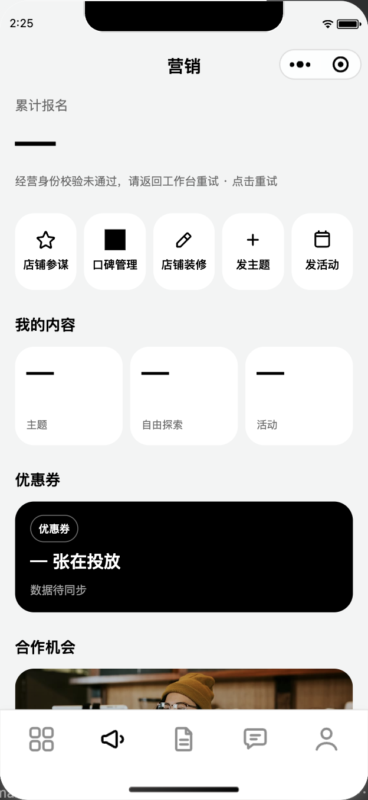

分支 fix/audit-wiring-202609 @ ebf42e7a9 · 报告时间 2026-09-19 · 边界:本轮只审不改
M 是并行 UI 会话的),因此没有「改前/改后」对比图;
但阶段2 的商家端走查新产并归档了 28 张只读截图(shots/)。
产出是 32 条带文件:行号 的编号发现(1 条 P0 / 11 条 P1 / 19 条 P2 / 1 条待核),总清单在
findings.md —— 请按号批复「1做 2核对 3删」。阶段0 基线产物已重跑并落盘(00-baseline.md + logs/)。
utils/playkit-view.js、后端 AdvancedGameRuntimeServiceImpl.java、utils/checkout/checkout-workflow.js、utils/ticket-source.js、utils/verification-scan.js、发布四页(fabu/temp/simple/activity)、报名与主题页建单口、提现页、券码轮询页、IM 两页。node scripts/ui-validity-gates.js、state-visibility-gate、setdata-dead-field-lint、sticky-bottom-bar-gate,并 grep 了 ci/xcx-check.sh 与 package.json 的门禁清单。app.json 双向对账。docs/audit-e2e-202609/ ├── findings.md ← 编号总清单 1–32,给你按号批复的那张表 ├── 00-baseline.md 阶段0 基线复跑(重建并落盘) ├── 01-cross-cutting.md 横切:票源归因 / 身份 / 请求层 ├── 01-unknown-state.md 写请求 unknown 态六处分流〔重建件〕 ├── 02-merchant-walk.md 商家端 28 路由只读走查(逐页状态 + 4 条新发现) ├── 03-player-trunk.md 玩家主干:报名 → 支付 → 票券 ├── 04-play-mode2-and-kits.md 玩法双模 + 玩法组件矩阵 ├── 04-playkit-event-contract.md 事件契约四条 + 23 条全量分诊 ├── 04-roam-and-codes.md 漫游 × 核销码 × IM ├── 05-publish-chain.md 内容 / 发布链路 ├── 06-gate-blindspots.md 门禁执法地图 + 盲区 ├── event-contract.js 探针:组件 triggerEvent ↔ 宿主监听(可复跑) ├── walk-merchant.js 商家端只读走查器:reLaunch → 读逻辑层 → 截图 ├── run-baseline.sh / run-automators.sh ├── logs/ 18 份门禁/冒烟/走查原始输出(含 483KB 单测全量) └── shots/ 28 张走查截图
walk-merchant.js 把 28 条注册路由逐条 reLaunch → 读逻辑层 page.data() → 截图,回来再逐条回磁盘读代码定性。产出即 02-merchant-walk.md 与 #29–#32。开放式代理不适合这种广度×证据活的 —— 记进项目记忆。| # | 级 | 域 | 发现 · 证据 |
|---|---|---|---|
| 1 | P0 | 玩法 | 三个挑战玩法永远开不了秒表。「变色就点 / 弹球 / 安静挑战」组件都 triggerEvent('start'),但分发器 playkit/index.wxml:75-87 三家都没接 bind:start(countdown/stopwatch 在 :90/:95 有)→ START_CHALLENGE 永不发出 → 后端 serverElapsedMs 必抛「…还没开始」(AdvancedGameRuntimeServiceImpl.java:1382-1384,调用 :1395/:1429/:1452)。玩家能玩完、永远不能成绩成立。 |
| 2 | P1 | 横切·钱 | 俱乐部分享落主题页,建单丢票源归因。club/detail/index.js:2634 分享带 sourceClubId,主题页建单口 topic/index/index.js:875-882 不合并 attributionPayload(全仓只有 baoming.js:1199 合并)→ 这一单归平台,俱乐部票源奖励静默为 0。 |
| 3 | P1 | 横切·钱 | 三处「付了钱但结果不明」点了没反应。unknown 是 checkout 终态(checkout-workflow.js 无复位接口),三宿主只撤 loading 不给理由:components/cy/scene-member-order-detail/index.js:521-524、components/cy/scene-member-order-history/index.js:351-354、pages/topic/index/index.js:1076-1079。对照正确先例 baoming.js:1563-1575、coop/list/index.js:609-612、game-node/index.js:693-698。 |
| 4 | P1 | 玩家·报名 | 库存为空的票种显示「余票待确认」,点下去说「已售罄」并硬拦。scene-play-activity-detail/index.js:53-56 把 remaining===null 算成 _available=false,:281-284 据此拦截;字段确实可空:sql/base_schema_20260818.sql:3700。 |
| 5 | P1 | 发布 | temp「据点玩法形态必选」拦不住发布。错误写了(temp/index.js:1918-1920)、红字也渲染(index.wxml:137),但 validateForm 放行清单 :1982 少 interactionType(同文件预览兜底 :1990 里有)→ 不选也能发,商家以为配好了,玩家侧据点空洞。 |
| 6 | P1 | 发布 | simple 置灰主 CTA 没有 disabledtap,唯一自解释文案永远出不来。simple/index.wxml:83 只 bindtap;cy-btn/index.js:35-40 禁用态吞 tap。全页 disabledtap 命中 0,那句「请逐个在地图中确认地点后再继续」在 index.js:230 里等不到执行。 |
| 7 | P1 | 俱乐部 | 角色分配弹层的「选择成员」是假的 → 会写给错的人。组件抛 selectmember(club-director-role-sheet/index.js:26,行是可点的 index.wxml:4),宿主 club/topic-detail/index.wxml:267-268 只接了另外四个;全仓 selectmember 监听 0。确认时提交的是最初点进来的 roleDraft.memberId(director.js confirmRoleAssignment)。 |
| 8 | P1 | 玩法 | 「沉默点单」的「放弃」按钮按下去什么都不发生(F-PB-1,详见 04-play-mode2-and-kits.md)。 |
| 9 | P1 | 玩法 | 探店日无坐标站点:按钮写「去这家」,点下去把这一站演成已通关(前置条件)。对称缺失:checkin() 有 mode2 分支(play/index.js:3676-3678),arrive() 没有(:3643-3660 成功即 onComplete)。 |
| 10 | P1 | 玩法 | 跨日任务(slowTask)在任何创作入口都配不出来 —— 玩家侧有实现、分发器有分支,配置侧缺门。 |
| 11 | P1 | 门禁 | 本分支现在开 PR 必挂 CI,且是本分支自己造成的。ui-validity-gates 实跑 EXIT=1(U4/U5),CI 确实跑它(ci/xcx-check.sh:245-246)。根因:02f9105f1 删掉了 temp/index.js 对 nodeName/themeName 的读者,master 上原在 :839/:842,使基线里的 ::A2 条目跳成 A1 —— 基线文件没动,代码变了。 |
| 12 | P1 | 门禁 | 四条 automator 冒烟全在 CI 之外,红的那个没人看见。grep automator ci/xcx-check.sh 零命中;test:automator:stamp-camera-crop 当前红。 |
| 13 | P2 | 玩家 | 截止校验只在详情组件(scene-play-activity-detail/index.js:285-288),深链直入 baoming 要填完整张表才被后端拒。 |
| 14 | P2 | 发布 | simple 整块旧「快速发布」链路是孤儿(onPublish/onSaveDraft/onClubChange 零绑定),且其反馈函数 tip() 写的 data.toast 在 wxml 从不渲染 —— 若重新接线必须先换通道。 |
| 15 | P2 | 发布 | simple 发布成功无去详情路:topicUrl 算出后未使用(simple/index.js:632-637),落点本身符合 2026-09-06 裁决,只报赘码。 |
| 16 | P2 | 埋点 | 主题发布成功埋点 bizId 恒 null:fabu/index.js:5708 取 resData.id,而后端返回标量(ApiTopicController.java:464)。 |
| 17 | P2 | 发布 | 活动草稿续写恒回第 0 步(myproject/index.js:290 → activity/index.js:72,全页仅用户点击改 step)。 |
| 18 | P2 | 发布 | AI 安全预检只在 fabu(fabu/index.js:5383),其余三条提交口无 advisory;但服务端每条都有 checkText(ApiTemplateController:329/380 等),故从 P1 降为 P2。 |
| 19 | P2 | 发布 | topicadd 生产零引用但仍被 7 处测试/脚本持有(上轮遗留的删除期裁决)。 |
| 20 | P2 | 核销码 | 据点码在商家首页扫码口被拒且不指路:verification-scan.js:20 → merchant/index/index.js:856-860 只 toast。护栏本身是对的(verification-scan.test.js:42-48),缺的是「请从据点页核销」。 |
| 21 | P2 | 漫游 | hangoutId 死参数:roam/index.js:629 传,subpackageRoam/nearby/index.js:104 的 onLoad() 连形参都没有。 |
| 22 | P2 | 核销码 | 出码倒计时兜底 TTL 两端分叉:300s(citynode-code:51)对 60s(game-node:569),服务端真值只有一档 DYN_TTL_MS=300_000。今天不发作(字段恒在)。 |
| 23 | P2 | 玩法 | 排行榜拉取失败被说成「还没有排名数据」并抛未处理 rejection(F-PB-4)。 |
| 24 | P2 | 玩法 | 音乐角「听完」那次提交是双死代码,注释与真源互相打脸(F-PB-5)。 |
| 25 | P2 | 玩法 | 关高级面板不收 playKit 弹层,两层 sheet 可叠(F-PB-6,潜在)。 |
| 26 | P2 | 组件 | cy-upload 的失败重试两宿主都没接(activity :101-109、club/apply :154 均无 errorIndexes/bind:retry)→ 组件承诺的 §3.13「禁静默丢图」在两处空挂。 |
| 27 | P2 | 组件 | cy-calendar 的 maxRange/overrange 全仓无使用者,且设计是「越界即静默吞掉,由调用方提示」→ 潜在哑巴。 |
| 28 | P2 | 门禁 | sticky-bottom-bar-gate 是唯一真孤儿(无 npm、无 CI、无 require)且当前红 5 条 —— 挂线前先裁决 .fx-bg/.fx-hero/cy-proto-cam 是不是误判。 |
| 29 | P2 | 商家·客户 | 客户导出下载失败时同屏既说「已就绪」又说「失败」:merchant/customer/index.js:1167-1168 写 exportState:'SUCCESS' 又写 exportError,index.wxml:90/93/96 两套文案同渲染。证据 shots/merchant-customer-index.png。 |
| 30 | P2 | 商家·装修 | decor/story 283 行未注册进 app.json、生产目录逐目录扫零引用(装修子页只 5 个,app.json:131-135),但 11 个文件 25 行在守它:7 个单测(含 access-gate-contract:122 要求权限门、editor-state-contract 真 loadPage)+ 截图脚本 + 接线台账 + U4 基线。玩家进不去的页占了 7 个单测的断言面;若删要 11 处一起清并重建台账。 |
| 31 | 待核 | 商家端 | reviews / relation / citynode 三页 reLaunch 后落在工作台(截图留证 shots/UNVERIFIED-*.png)。代码里找不到自动跳转:唯一的 reLaunch 在用户主动 onNavBack 里,三页入口也都在;复跑二次确认时 DevTools 被并行会话占走 → 请人工在模拟器点一次,正常则删这条。 |
| 32 | P2 | 商家·台账 | merchant-ledger-settlement-smoke.js:17-24 用 page.setData 灌假数据再断言,所以它是绿的;同一页本轮冷进真实态是 error:true(shots/merchant-ledger-index.png)。它测的是渲染不是连通。 |
| — | 不编号 | 组件契约 | 事件契约探针 23 条里,除 #1/#7/#26/#27 外的 17 条判无害(7 条组件内部已自消化、8 条渲染条件进不去的死能力、2 条无害中继),逐条取证见 04-playkit-event-contract.md。那 8 条死能力是事件契约门禁能否挂线的前置裁决。 |
本轮 0 处 UI 改动 —— 边界写死「只审不改」,32 条发现全落在 JS / 事件绑定 / 门禁 / 注册表层,没动过一张 wxml 的视觉结构或 wxss。因此没有「改前 / 改后」对比图可放。
但截图是有的**:阶段2 商家端 28 条注册路由逐页走查,每页一张逻辑层真截图,已归档在 shots/(2.0MB)。它们证明的是「这页打开后处于什么态」,不是「我把它改成了什么样」—— 两者别混。
截图(shots/) | 这张图在证明什么 |
|---|---|
merchant-ledger-index.png | 冷进账目页即 error:true,但错误态文案与「重新加载」出口都在 —— 支撑 #32(冒烟绿 ≠ 页面通)。 |
merchant-marketing-index.png | 顶部横幅「经营身份校验未通过,请返回工作台重试」,数字全用「—」占位而不是假 0 —— 这是全站少见的诚实降级写法,不该被当成 bug 修掉。 |
UNVERIFIED-bounced-to-workbench-merchant-reviews-index.png | #31 的证据:reLaunch 到 reviews 却画出工作台。文件名前缀 UNVERIFIED 是故意的 —— 代码里找不到自动跳转,这条没升格成缺陷,等人手点一次再定。 |
merchant-customer-index.png | 客户页部分失败的诚实空态(统计到了、名单没到,它照实说并给重试);#29 的自相矛盾态要触发失败下载才现形,本轮写闸拦住,只有代码证据。 |
仓库里的 docs/screenshots/ 属于更早的 UI 整改批(与本审查无关),没当本轮证据贴进来 —— 那样会让「本轮改了界面」这个假象成立。
00-baseline.md + logs/ 18 份原始输出:8 条 CI 门禁里 7 绿 1 红,红的是 ui-validity-gates(U4/U5)。基线不再是口头结论,且那条红的根因已定位到具体 commit(02f9105f1 删读者 → 基线里 ::A2 跳成 A1)= #11。event-contract.js(可复跑),23 条逐条分诊。首版 24 条里有 1 条是尺子自己的假阳性(bindtap 不带冒号也等价),修完降到 23 —— 这条教训写在 04-playkit-event-contract.md 开头,挂线前必须带上。02-merchant-walk.md)。仍未验的(不算结论):#31 的回弹、ai-insight「商家资格已失效」与工作台「营业中」的矛盾、merchant/predict 冷进报「网络连接失败」而非缺参 —— 三条都要人工在模拟器点一次;商家写流程整块被 develop 版写闸拦死,静态侧只能到「请求体编码对、危险动作有确认」。详见 findings.md 第十节。
另:工作区那 27 个 M 状态的 UI 文件是并行会话的改动,不是本轮产生 —— git status 里本轮新增只有 ?? chengyinhub-xcx/docs/audit-e2e-202609/。
| 断言(来源) | 复核结果 |
|---|---|
| 「20 个门禁脚本没挂 npm script,等于没执法」 | 判据错。17 个由 ci/xcx-check.sh 直接调;真孤儿只有 1 个。state-visibility-gate 还经 ui-validity-gates.js:13 收编为 U6。已写进记忆:判挂线看 CI,不看 package.json。 |
「fabu/index.js:5713 const tid = resData 会拼出 topicId=[object Object] 让项目主页空白」 | 反了。后端返回标量 topicId(ApiTopicController.java:464),:5713 正确;错的是紧邻 :5708 的埋点取值。降级为 P2 埋点。 |
| 「提现页 catch 静默、错误位没人填」 | 否。tixian.js:278/286/299 每条失败都写 submitError,tixian.wxml:74 的 cy-inline-error 带「重试」接住;余额取不到另有 balanceErr 双位。这是全仓最规范的链路之一。 |
| 「coupon-qr 每次 onShow 无脑起轮询」 | 否。有 couponHistoryId 前置守卫,onHide/onUnload 清定时器,useStatus==1 自停。 |
| 「searchmap 入参兜底 maxPrice=1000 会悄悄屏蔽高价活动」 | 否。1000 是本页滑杆上限(初值/重置/夹取三处一致),页面明写「价格区间:¥0 - ¥1000」,不是静默。 |
「qr-citynode 未注册会走到『场景配置缺失』」 | 否。scene-registry.js:50 有登记;双向全量扫描(生产码里的场景 id ↔ 注册表 ↔ app.json)两个方向都 0 缺号。 |
「myinvite.js:133-147 邀请参数丢」「tests/unit/scene-param-lost.test.js 红」「withdrawal-preflight.js:26 缺 header 会 415」 | 三条全否:文件只有 26 行 / 测试文件不存在 / 四处调用都显式带 JSON header。 |
| 「商家『口碑』页没有入口」(我自己) | 判错并已撤回:第一条 grep 用了 grep -v 'pages/merchant/reviews/',而导航 URL 本身含这段字符串,把两条真入口(marketing/index.js:524、cy/profile/index.js:1657)一起过滤掉了。锚定 ^ 重跑即见。 |
「decor/story 全仓只剩一行负控在引用」(我自己,首版 #30) | 盘查漏了,已改成实数:重跑「生产目录 / 测试工具」分向计数后是 11 个文件 25 行(7 个单测 + 4 处工具资产),生产侧确实零入口。结论方向不变、量级差一个数量级 —— 判失效类结论必须分两向扫,不能拿一条 grep 的尾巴当全貌。 |
| 「事件契约探针首版报 24 条」(我自己造的尺子) | 其中 1 条是尺子的假阳性:WXML 里 bindtap 与 bind:tap 等价,只认带冒号就把 club/detail/index.wxml:330 的 catchtap 判成没接。修尺子后 23 条才是真值。另一处隐患同批修掉:{{x > 0}} 里的 > 会把属性串截断,漏读后面的 bind:。 |
unknown 后的服务端回读。getPhoneNumber 授权与 80058。scene 入场的实机落地。ext.json。findings.md 的 1–32 号批复(「1做 2核对 3删」口径);修复批另开,本会话不动业务代码。ai-insight/predict 两条一起验(写闸放开或换体验版)。sticky-bottom-bar-gate 5 条透底(.fx-bg/.fx-hero 像背景层)—— 裁完才谈挂线,否则一挂就常驻红。